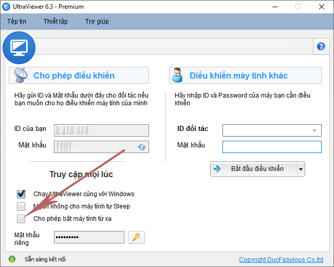

Công cụ truy cập máy tính từ xa đơn giản, nhanh chóng, dễ dàng nhất hiện nay
“Truy cập máy tính từ xa” là một cụm từ đang dần trở nên phổ biến với những nhân viên và công ty hoạt động theo hình thức làm việc tại nhà. Vậy truy cập máy tính từ xa có vai trò gì? Làm thế nào để vận hành nó một cách đơn giản, hiệu quả và nhanh chóng ?
1. Tại sao bạn cần truy cập máy tính từ xa?
Chắc hẳn thời gian gần đây bạn đã nghe rất nhiều về hình thức làm việc từ xa. Không những vậy, nó còn được các chuyên gia đánh giá là xu thế làm việc của tương lai trong nhiều năm tới.
Bạn có cơ hội được giải phóng khỏi vị trí cố định tại công ty và thực hiện công việc ngoài văn phòng chính. Bạn có thể làm việc bất kỳ đâu mà bạn muốn, miễn là đảm bảo đúng tiến độ công việc. Đó có thể là phòng riêng tại nhà của bạn, một quán cafe hay một khách sạn lưu trú khi bạn đang đi công tác ở một thành phố, thậm chí 1 quốc gia khác.
Hoàn toàn không có giới hạn địa lý nào khi làm việc từ xa. Tất cả những gì bạn cần là một chiếc máy tính có kết nối internet ổn định và có khả năng truy cập từ xa trên thiết bị đặt tại văn phòng. Một số trường hợp bạn có thể cần truy cập máy tính từ xa như:
HẠN CHẾ LÀM VIỆC NƠI ĐÔNG NGƯỜI
Khu vực bạn sống có tình hình dịch bệnh phức tạp. Bạn không thể di chuyển khỏi khu vực lưu trú và được công ty yêu cầu làm việc tại nhà để đảm bảo an toàn cho mọi người. Giả sử bạn là một nhân viên thiết kế, việc truy cập máy tính tại văn phòng để lấy các file dữ liệu và thực hiện công việc đang dang dở là thật sự cần thiết.
LÀM VIỆC XUYÊN QUỐC GIA
Bạn tìm kiếm được một công việc yêu thích, phù hợp với kinh nghiệm và chuyên môn của mình. Tuy nhiên, trụ sở công ty lại cách xa nơi bạn ở hàng chục, hàng trăm km và bạn không sẵn sàng đi làm xa gia đình của mình. Nếu công ty cho phép làm việc tại nhà, đó là lúc bạn có thể cần truy cập máy tính từ xa.
HỖ TRỢ TỪ XA
Bạn làm những công việc cần thường xuyên hỗ trợ mọi người từ xa như: nhân viên kỹ thuật - IT, sửa chữa máy tính, cài đặt và hướng dẫn sử dụng phần mềm, giáo viên dạy học và chữa bài thiết kế, đồ họa từ xa cho học viên, kỹ sư điều khiển phần mềm tại nhà máy…
QUẢN LÝ VÀ GIÁM SÁT
Bạn đang đi công tác xa nhưng vẫn cần truy cập máy tính tại văn phòng để làm việc. Bạn là trưởng phòng muốn quản lý, kiểm tra, giám sát công việc của nhân viên đột xuất mà không cần báo trước. Quyền truy cập máy tính từ xa sẽ giúp công việc của bạn được thực hiện dễ dàng hơn rất nhiều.
Như vậy, nhu cầu truy cập máy tính từ xa là tương đối lớn trên nhiều lĩnh vực và ngành nghề khác nhau. Nó sẽ giúp doanh nghiệp và người lao động làm việc hiệu quả đồng thời tiết kiệm thời gian và chi phí cố định. Giờ đây bạn đã có thể làm việc từ xa một cách thoải mái, an toàn và không có giới hạn.
2. Công cụ truy cập máy tính từ xa đơn giản, nhanh chóng, dễ dàng
Hiện nay có khá nhiều phần mềm truy cập máy tính từ xa. Bạn có thể sử dụng một số ứng dụng miễn phí tích hợp sẵn trên Windows hoặc chuyên dùng cho trình duyệt Chorme. Tuy nhiên, những phần mềm có sẵn này còn khá nhiều hạn chế như: thiếu tính năng chat, khó truyền file, không kết nối được máy tính từ xa bên ngoài mạng nội bộ…
Hoặc bạn có thể sử dụng các phần mềm thương mại khác trên thị trường. Nhưng nó cũng tốn khá nhiều chi phí và cần có nhiều kiến thức về máy tính để vận hành hiệu quả.
Nếu bạn vẫn đang tìm kiếm một công cụ giúp truy cập máy tính xa đơn giản, nhanh chóng và dễ dàng thì có lẽ phần mềm điều khiển máy tính từ xa Ultraviewer là sự lựa chọn tuyệt vời nhất hiện nay. Ultraviewer sở hữu nhiều ưu điểm sáng giá giúp đem đến trải nghiệm điều khiển và truy cập máy tính từ xa chuyên nghiệp, mượt mà cho khách hàng:
Miễn phí
Bạn có thể bắt đầu truy cập máy tính từ xa hoàn toàn miễn phí với Ultraviewer nếu bạn có nhu cầu sử dụng ít và không thường xuyên. Dù chỉ dùng phiên bản miễn phí, công cụ này vẫn sẽ đem đến cho bạn trải nghiệm vô cùng tuyệt vời và dễ chịu. Ultraviewer không giới hạn số lượt điều khiển, không ngắt kết nối đột ngột, và không thông báo yêu cầu trả phí sau một khoảng thời gián sử dụng giống một số phần mềm tương tự trên thị trường.
Cài đặt và vận hành dễ dàng
Với dung lượng siêu nhẹ chỉ khoảng 1,3MB, bạn có thể tải về và cài đặt Ultraviewer trên máy một cách nhanh chóng mà không lo ngốn nhiều tài nguyên trên máy tính. Khách hàng mới nếu cần hỗ trợ gấp cũng không cảm thấy khó chịu hay phiền phức bởi quá trình tải phần mềm. Chỉ cần có kết nối internet ổn định và cài đặt Ultraviewer ở 2 máy, quá trình truy cập từ xa đã có thể diễn ra.
Xem thêm: Hướng dẫn sử dụng Ultraviewer.
Ngoài ra, giao diện khoa học, chuyên nghiệp của Ultraviewer cũng là một điểm cộng không thể bỏ qua. Tính năng chat thân thiện có tích hợp công cụ nhắc lời chat sẽ giúp quá trình chăm sóc khách hàng của bạn tiết kiệm thời gian và chuyên nghiệp hóa hơn.
Truy cập máy tính văn phòng nhanh chóng
Ultraviewer cho phép bạn dễ dàng truy cập máy tính từ xa tại văn phòng, làm việc trên máy và hoàn chỉnh các công việc dang dở như thể bạn đang ngồi ngay trước máy tính. Tính năng bật máy tính từ xa (Wake On Lan) được thiết lập thông minh giúp bạn có thể đưa máy tính thoát khỏi trạng thái Sleep (Ngủ) hoặc Hibernate (Ngủ Đông) sang trạng thái sẵn sàng hoạt động chỉ sau một vài phút. Không cần các cài đặt phức tạp hay hỗ trợ của máy tính thứ ba.

Hỗ trợ nhiều người một lúc
Bằng cách cài đặt Ultraviewer, bạn đã có thể bắt đầu điều khiển và hỗ trợ khách hàng từ xa. Ultraviewer cho phép bạn cùng lúc kết nối và hỗ trợ không giới hạn cho nhiều máy tính. Nhờ vậy, công việc của bạn được diễn ra liên tục, tiết kiệm chi phí và thời gian hơn.
Chia sẻ dữ liệu sắc nét
Nếu bạn thường xuyên phải truy cập máy tính từ xa và chia sẻ các file tài liệu hướng dẫn, hợp đồng cho khách hàng, Ultraviewer sẽ giúp bạn thực hiện điều đó một cách nhanh chóng và ổn định. Hiện nay, bản quyền của Ultraviewer đang cập nhật tính năng cho phép gửi file dung lượng nặng tùy phiên bản, cao nhất lên tới 12GB.
Bên cạnh đó, phần mềm Ultraviewer còn hỗ trợ độ phân giải 4K Ultra HD và cho phép chia sẻ âm thanh giữa 2 máy tính. Hình ảnh sắc nét, âm thanh chân thực, rõ ràng sẽ giúp trải nghiệm hỗ trợ và chia sẻ màn hình trở nên sống động, không khoảng cách.
Vậy là bạn vừa khám phá được một công cụ hỗ trợ truy cập máy tính từ xa đơn giản, nhanh chóng, dễ dàng. Hãy tải về, cài đặt và trải nghiệm Ultraviewer ngay nhé!


Viết bình luận (Cancel Reply)